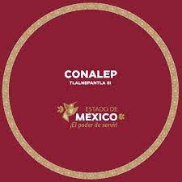

Contacto
Maestra: Maribel Esparza
Numeros:
5553113890
5553104639
Extencion vinculacion 107
Correo electrónico: maribel.esparza_231@conalepmex.edu.mx
Dirección
Dirección: Calle 10 s/n Col. Olivo II, Tlalnepantla, Estado de MéxicoCarreras
Enfermería general
Enfermería comunitaria
Enfermería respiratoria
